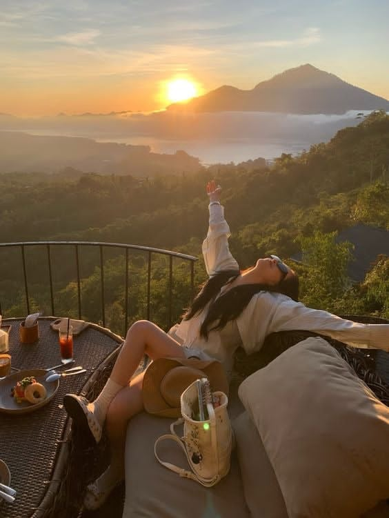

I almost missed this one rushing to get a table with a view — but the sky waited for me. Dinner arrived just as the sun dropped behind the volcano, and for a few minutes the whole terrace went quiet, everyone just watching. I don't think a photo really holds onto how still it felt up there, but I keep trying anyway.